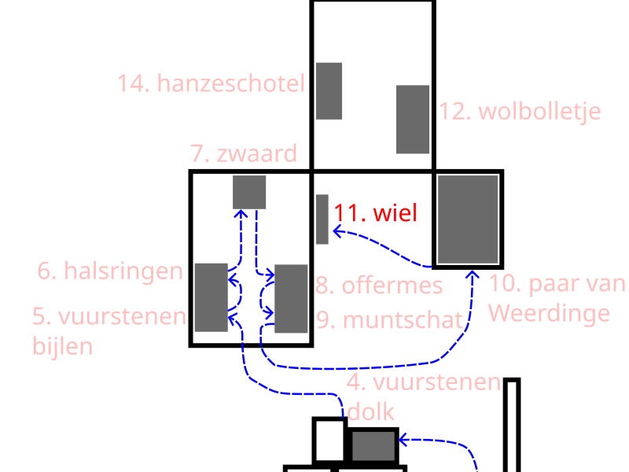

10. Das Ehepaar aus Weerdinge


Im Jahr 1904 wurden im Weerdingerveen in Drenthe zwei außergewöhnliche Moorleichen gefunden. Ein Torfarbeiter entdeckte sie beim Torfstechen. Die Leichen waren so gut erhalten, dass sie in eine Leichenhalle in Nieuw-Weerdinge gebracht wurden. Dank des Moores waren Haut und Haare noch teilweise intakt. Dieser Fund ist als „Das Paar von Weerdinge“ bekannt.
Untersuchungen zeigen, dass es sich um zwei Männer handelt, die wahrscheinlich in der späten Eisenzeit, um die Zeit der Jahrtausendwende, lebten. DNA-Untersuchungen aus dem Jahr 1990 ergaben, dass sie unterschiedliche Mütter hatten.
Auffällig ist, dass keine Kleidung oder persönliche Gegenstände gefunden wurden. Die Männer waren nackt im Moor abgelegt worden. Bei einem von ihnen wurde möglicherweise eine Stichwunde in der Brust festgestellt, was auf einen gewaltsamen Tod hindeuten könnte.
Wissenschaftler vermuten, dass es sich hierbei nicht um eine gewöhnliche Bestattung handelte. In alten Kulturen wurden Sümpfe manchmal für Rituale oder zur Bestrafung genutzt. Menschen konnten dort zurückgelassen werden, um die Götter gnädig zu stimmen oder um gesellschaftliche Regeln durchzusetzen.
Auch der römische Schriftsteller Tacitus beschrieb, dass Germanen Menschen manchmal als Strafe in Sümpfen zurückließen.
Wir wissen es nicht mit Sicherheit, aber dieser Fund zeigt, dass Moorgebiete im Leben und Denken der Menschen in der Antike eine besondere und manchmal auch harte Bedeutung hatten.
Der nächste Hörpunkt ist das hölzerne Scheibenrad von Steenwijk.